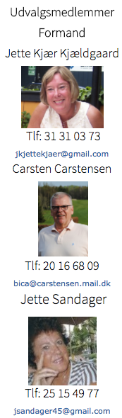
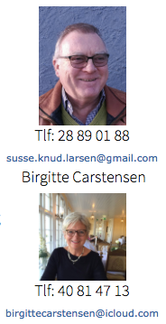

<div class="pages">
  <div data-page="facility" class="page navbar-fixed toolbar-fixed" >
    <div class="navbar">
      <div class="navbar-inner">
        <div class="left">
          <a href="#" class="link back icon-only"><i class="icon icon-back"></i></a>
          <!-- <a href="#" class="back link icon-only"><i class="icon icon-back"></i></a> -->
        </div>
        <div class="center">Facility Udvalget</div>
        <!-- <div class="right"></div> -->
        <div class="right">
        </div>
      </div>
    </div>
    <div class="page-content" style="padding-top:45px;">
       <div class="content-block">
          <p>Frivilligt arbejde er en meget stor drivkraft i Hornbæk Golfklub. Klubben har i 2016 etableret et Facility udvalg alene bestående af frivillige, der i teams løser de facility-opgaver, der findes vedrørende følgende hovedområder:<br /><br />
            Klubhus, restaurant og shop<br />
            Klubområde, driving range og puttegreen<br />
            Sekretariat og indgang<br />
            Parkering og indkørsel<br />
            Lærkereden<br />
            Lærkeager bagrum og ridehal<br />
            Havearbejde ad hoc<br /><br />
            Udover teamledere er ca. 20 frivillige tilknyttet grupperne, og de hjælper løbende med løsning af de fælles opgaver i områderne.
            <br /><br /> 
            Meget af arbejdet vedrører vedligeholdelse af bygninger indendørs såvel som udendørs, og
            grupperne bemandes alt efter arbejdets omfang og art.
            <br /><br /> 
            Der afholdes møder i udvalget hver anden måned – eller ved behov.
            <br /><br /> 
            Vedligeholdelse af planter og blomster i Restaurantområdet og på Lærkeager sker løbende og der plantes ud afhængig af sæson.
            <br /><br /> 
            I 2016 er der malet vinduer i restauranten og køkkenet, og dette arbejde færdiggøres i starten af 2017, hvor panelerne males i indgangen. Derudover er postkasserne flyttet og begge toiletter malet.
            I 2017 lægges fliser ved disken i restauranten, hvor der slides meget.
            I Lærkereden er der malet indvendigt og etableret et rum i køkkenet for udvalgets medlemmer. Her holdes møderne. Derudover er dørene malet og der er etableret løbende rengøring i bagrummet i ridehallen.
            To lugedage er afholdt i september/oktober 2016, og de flotte resultater kan I læse under Nyheder. Vi gentager succesen i 2017.
             I 2017 vil starterhuset blive fjernet og der etableres et bed i stedet. Der vil blive malet og set på en gennemgribende renovering af Midtvejshuset, og der bliver gjort hovedrent i bagrummet bag sekretariatet.
            Shoppen og sekretariatet får en ’make over’ og nyt vindue sættes i shoppen så gitter kan fjernes, og vi derved etablerer en mere indbydende salgsindgang.
            <br /><br /> 
            Har DU lyst og tid til at give en hånd med så kontakt én af teamlederne eller formanden. Selv få timers hjælp vil blive meget værdsat
            </p>
          <br />
          
        </div>
    </div>
    </div>
    </div>
  </div>
</div>
